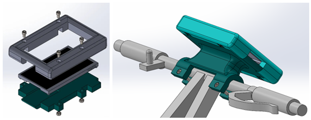
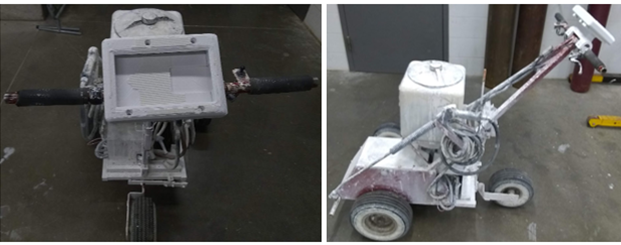
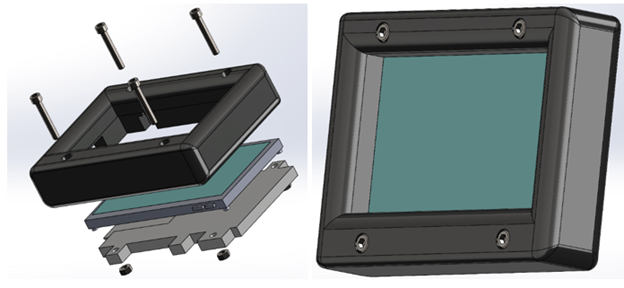
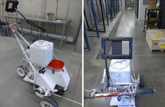
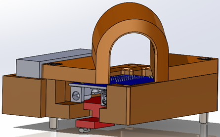
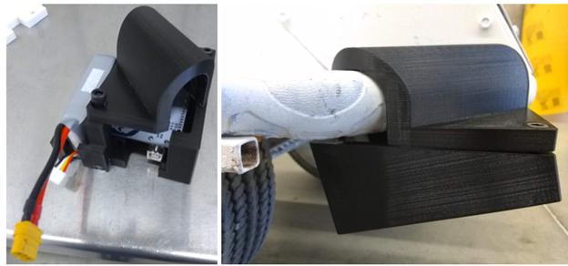
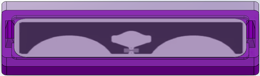
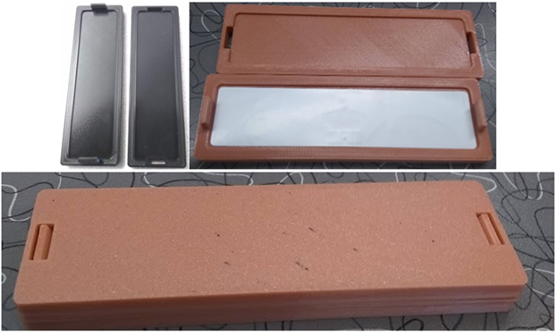
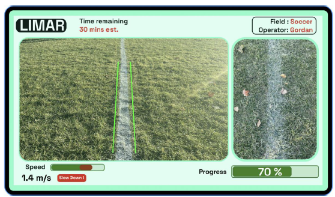

Fourth Year Design Project – LiMar
Our forth-year design project aimed to improve how line markings on sports fields are painted. Currently, at the start of
the year, the field maintence team spends about 10-20 manhours/field to measure, mark and then paint the field lines. Then
every week, the team spends about 0.5-1 manhours/field to paint over the previous lines to ensure they stay visible and
aren't fading. This is done weekly or sometimes bi-weekly depending on the condition of the painted lines. This is to
avoid the huge time commitment of painting the field from scratch if the lines were allowed to fade completely. This is
waste of paint, time, and labour. Especially as this weekly painting is continued even during weeks when no-one is using
the field.
Solution
I worked on all aspects of the mechanical design using SolidWorks and contributed to the programming of the graphical user interface in Python. The sections below highlight the various aspects of design associated with the project.
Display Mount
 
However, it was soon found that while this solution was sufficient, it was not ergonomic and would hurt the operator's neck during operation. As well, it would make it difficult for the operator to view both the screen and the field causing unwanted inaccuracies due to focus issues. As such a redesign was required. This involved use a prebuilt tablet mount and designing only an enclosure for the display. This is shown below:
 
RFID Reader Mount
 
RFID Tag Casing
 
GUI

Results and Next Steps
- An attempt was made at an algorithm that could detect pre-existing lines and use that data in addition to the RFID data to create a virtual line for the operator to follow. This however, did not work due to the large amount of noise due to the grassy environment. More research can be put into this aspect.
- The range of the RFID tags were quite limited especially when under dirt. More research can be done to either amplify the signal or find a better RFID tag/reader.
- Better integration of the electronics as currently two different batteries were used. One for the reader, and another for the display screen and the Jetson Nano.